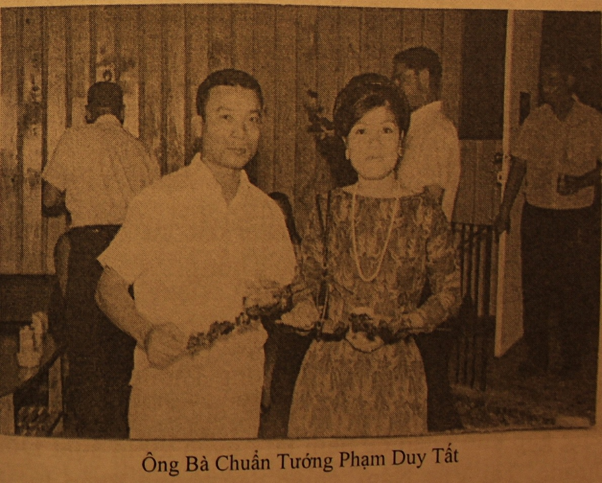

Đệ nhị Thế chiến bùng nổ, tôi một cậu bé đang học bậc Tiểu học trường Huyện, từ nhà đi bộ đến trường khoảng 7 cây số. Hằng ngày tôi đã mục kích những trận không chiến, máy bay Mỹ rượt đuổi, bắn hạ máy bay Nhật trên bầu trời quê tôi. Tôi đã không chút sợ hãi, còn vui thích đứng nhìn. Tôi đã có cảm tình với Mỹ và căm ghét quân Phát Xít Nhật từ đó.
Nhật đầu hàng, Việt Minh nổi dậy cướp chính quyền ( Cách Mạng tháng Tám). tiếp theo quân đội Pháp trở lại Đông Dương, chiếm đón quê tôi. Đây là vùng có chiều ngang hẹp nhất, một khu vực chiến lược nằm chính giữa nước Việt hình chữ S. Chính vì tính cách chiến lược của nó nên người Nhật đến cũng chiếm đóng, quân Pháp quay trở lại cũng trấn giữ tại đây. Trong cuộc chiến tranh xâm lược của Cộng Sản miền Bắc, đây chính là khởi đầu con đường mòn Hồ Chí Minh. Trong thời kỳ Mỹ oanh tạc miền Bắc, quê tôi phải chịu nhiều bom đạn triền miên. Sau này tôi mới biết chị dâu, vợ anh Cả tôi đã chết cùng đứa cháu vì bom Mỹ.
Tôi là con út trong một gia đình địa chủ – phú nông. Tôi có 5 anh trai và một chị gái. Cha mất sớm, anh cả tôi quyền huynh thế phụ, trông nom gia đình. Anh thứ hai là cán sự Công Chánh (lúc bấy giờ Kỹ Sư Công Chánh Việt Nam không có hoặc rất hiếm) là chuyên viên, công chức Pháp phụ trách mở đường sá, xây dựng cầu cống tỉnh Pleiku mà Pháp vừa thành lập. Người anh thứ ba cũng là chuyên viên làm việc với anh thứ hai tại Pleiku. Chị gái tôi đã có chồng người làng khác cùng Huyện. Anh rể tôi cũng con một gia đình địa chủ – phú nông. Anh thứ tư đang học trường Bách Khoa ở thành phố Vinh tỉnh Nghệ An. Anh thứ năm Phạm Vỵ và tôi đang ở nhà với mẹ. Nhật đảo chánh Pháp, hai người anh ở Pleiku trở về nhà. Việt Minh nổi lên. Người anh thứ tư Phạm Lũy theo Việt Minh từ trước, trở thành Chính trị viên một đơn vị Giải phóng quân. Pháp trở lại, với chính sách tiêu thổ kháng chiến ban bố ra, gia đình tôi phải chạy lên núi vào vùng kháng chiến. Một thời gian ngắn sau, mẹ tôi và anh Cả, anh Vỵ cùng tôi trở về nhà.
Thảm họa bắt đầu đến với gia đình tôi, anh Cả bị Pháp bắt giết khi họ vừa đặt chân đến quê tôi. Tiếp theo quân Pháp tiến hành khủng bố dân làng, mở cuộc hành quân bố ráp bắt khoảng 50 người không phân biệt già trẻ lớn bé xả súng giết toàn bộ. Tôi thoát chết nhờ không ở ngay trên con đường đi qua của chúng. Mẹ tôi sợ quá nên đưa tôi vào chiến khu. Hai người anh kế rồi cũng bị quân Pháp bắt, bị tra tấn, nhưng sau đó được thả ra. Anh thứ hai không muốn về hợp tác, làm việc lại cho Pháp nên đã chạy vào chiến khu. Trái lại anh thứ ba thì chạy về thị xã Đồng Hới và đầu quân vào quân đội Quốc gia, bấy giờ gọi là Việt Binh Đoàn. Anh kế tôi, Phạm Vỵ trốn mẹ tôi, chỉ nói với tôi rằng phải đi về Đồng Hới chứ không ở đây nữa. Anh rể tôi thay vì chạy vào khu, lại đưa gia đình về Đồng Hới, khi trở về làng thì bị bọn Việt Minh giết. Anh thứ tư Phạm Lũy theo Việt Minh sớm thì cũng chết sớm trong trận đánh tại Xuân Bồ năm 1950. Chính anh Vỵ tôi đã tịch thu được cái “xắc-cốt”, loại chỉ có cán bộ mới đeo, trong xắc có hình ảnh, tài liệu đầy đủ, nên mới biết đó chính là anh mình. Đây không những là người Việt giết người Việt mà còn là anh em giết nhau. Thảm cảnh của đa số các gia đình Việt Nam trong thời chiến. Mẹ tôi, như bao nhiêu bà mẹ Việt Nam khác đã chịu nhiều khổ sở, đau lòng với những nghịch cảnh, làm sao cầm được nước mắt khi nhớ đến con mình.
Năm 1946 trong khi ở chiến khu có tuyển thiếu niên để đưa ra Vinh học, nghe nói đào tạo kỹ sư. Tôi đang ao ước được tiếp tục học nên đã ghi danh, nhưng không được chọn. Lúc bấy giờ tôi đã từng nghe đến hai chữ Cộng sản và thường là gắn liền với thành phần vô sản, giai cấp vô sản. tuy còn non nớt nhưng tôi cũng nhận thức được mình không ở trong thành phần này nên không được chọn. Thế là tôi trở về và lần mò về Đồng Hới tìm anh Vỵ tôi. Bước ngoặt cuộc đời tôi cũng bắt đầu từ đây. Trong thời gian đi học tại Huế, tôi mơ ước trở thành thầy giáo vì nghĩ đến đại đa số thanh thiếu niên quê tôi đều chịu cảnh mù chữ, nhưng cuối cùng tôi gia nhập Quân đội theo lệnh động viên lúc mà chiến trận đang ở giai đoạn quyết liệt năm 1954. Tôi đã là Sĩ quan trừ bị. Năm 1956 Bộ Quốc Phòng ra văn thư khuyến khích các Sĩ quan trừ bị gia nhập hiện dịch. Tôi thích lính, yêu Quân đội, thích đời sống mạo hiểm, nhưng không muốn thành lính chuyên nghiệp, “nghề lính”. Tôi sẽ trở về đời sống dân thường nếu hết chiến tranh. Vì vậy bạn bè cùng đơn vị ai cũng chuyển qua hiện dịch, riêng mình tôi thì không. Tôi cho rằng phục vụ tốt hay kém là do tinh thần mỗi người chứ không phải hiện dịch hay trừ bị. Tôi muốn chứng tỏ sĩ quan trừ bị, nhưng lại nghĩ chắc trừ bị không được đào tạo ưu tiên, có lẽ mình khó tiến xa, thôi hãy phó mặc đời mình trong tay Chúa. Tôi rất mê học nên dù đã vào Quân đội, trong những lúc thời gian thuận lợi, tôi tiếp tục đi học đêm, sau đó học hàm thụ. Tôi thích học Anh văn, toán và triết học nên mãi mê mua sách về tự học. Tôi không có thì giờ để thi và cũng không muốn thi cử. Tôi chỉ thuần túy cố gắng trau dồi kiến thức. Suốt 10 năm cuộc chiến trở nên ác liệt từ 1965 đến 1975, tôi không hề có ngày ngơi nghỉ. tôi thoát chết rất nhiều lần trong dường tơ kẽ tóc. một lần tại Khe Sanh, trời lạnh, tôi rời ghế phía ngoài cùng vào ghế trong, chiếc C&C của tôi vừa bay vào thung lũng thì súng phòng không địch bên dưới sườn núi bắn một loạt. nhìn lại cái ghế tôi vừa rời khỏi lãnh mấy viên đạn xuyên thủng. Lần khác ở Bồng Sơn, Phú yên chiếc C&C của tôi bị trúng đạn, tôi phải ngồi lên trực thăng võ trang (gunship) để vào vùng, trực thăng xạ kích, tôi liên lạc chỉ huy hướng dẫn. Chiếc gunship cũng trúng đạn lổ chổ phải quay trở về đáp, viên phi công kiểm soát rồi chỉ cho tôi và cố vấn xem, sợi dây cáp to hơn ngón tay cái nối liền với chong chóng đuôi nay chỉ còn là một sợi chỉ. Viên phi công, Cố vấn và tôi ba người nhìn nhau trợn mắt không nói được lời nào. Lần khác tại thung lũng Ashau, một Toán bị tấn công, C&C phải đáp xuống cấp cứu, triệt thoái Toán, phi cơ bị bắn không còn bay được phải bỏ lại tại chỗ. Chiếc khác phải đáp xuống cứu ra. Còn nhiều trường hợp lắm. nhiều người thường nói rằng các ông bay cao an toàn, sung sướng quá, đi dưới đất mới khổ, mới nguy hiểm. Điều đó còn tùy. Nếu tôi được đi dưới đất có lẽ tôi thích hơn. Chính vì những hiểm nguy quên mình này cho nên Không Lực Hoa Kỳ mới tặng thưởng cho tôi huân chương cao quý nhât của Quân chủng này là “Distinguish Flyng Cross” và “Air Medal with V device”.
Từ 1965 đến tháng Tư 1975, 10 năm khốc liệt tôi tham chiến khắp 4 Vùng Chiến Thuật, tôi đã trải qua bao nhiêu trận chiến lớn nhỏ, tôi chưa hề để thua trận nào. Dù ở đâu, tôi cũng phục vụ hết mình.Tôi có thể hãnh diện rằng mình đã làm nhiều hơn trách nhiệm đòi hỏi. Cuộc rút bỏ Kontum – Pleiku cấp tốc về Nha Trang để tái chiếm lại Ban Mê Thuột là một chiến lược phiêu lưu, bỏ của chạy lấy người của cấp lãnh đạo tối cao dân sự cũng như quân sự ở Sài Gòn.. Không thể đổ lỗi các cấp chỉ huy chiến trường là kém cõi, hay cácTướng lãnh bất tài. Rút đi một Quân Đoàn, rút bỏ một Quân Khu, thì Bộ Tổng Tham Mưu phải có kế hoạch, có giám sát, yểm trợ đầy đủ, bao vùng v.v… Bộ Tổng Tham Mưu đã làm gì? Không làm gì cả, phó mặc.
Sài Gòn hấp hối, cá nhân tôi vẫn còn trực thăng để bay ra Hạm Đội 7. Viên Đại Tá Chỉ Huy Phó cơ quan DAO (Hoa Kỳ) cũng đến tận nhà ưu ái muốn đưa vợ con tôi di tản trước. Chúng tôi đã quyết định ở lại, chấp nhận số phận. Tôi không thể bỏ chạy một mình trong khi toàn bộ lực lượng Biệt Động Quân vẫn còn nguyên tại chỗ. Đại Úy Toàn, phi công trưởng khi biết tôi không đi liền nói với tôi: Nếu ông ở lại thì để cho tôi lấy trực thăng đi, máy bay đủ xăng, có tần số Hạm đội. Tôi đã trả lời với anh Toàn, tôi phải trả lại cho Không Quân. Nhìn thái độ của Toàn, rõ ràng anh ta là một sĩ quan kỷ luật sẽ trả lại máy bay. Tôi đã ân hận mãi, ước gì Đại Úy Toàn đã dùng trực thăng đó để thoát thân. Đại Úy Toàn đã cùng tôi mỗi ngày chịu cực, chịu nguy hiểm suốt hơn một năm trời. Những ngày sau cùng của miền nam, tôi đã từng nghĩ đến một phát đạn kết liễu cuộc đời, đêm nằm thổn thức một mình với miên man đủ thứ trong đầu. Tôi là người Công Giáo, sự sống và sự chết của tôi là do Chúa định đoạt, tôi không có quyền tự lựa chọn. Tôi tin mọi sự đã có Chúa an bài. Cũng như bao lần tôi thoát chết chẳng phải đã có bàn tay của Chúa đó sao? Tin tức có tắm máu, xử theo tội phạm chiến tranh. Tôi bình thản kể cả phải ra pháp trường. Cuối cùng Tướng Đỗ Kế Giai và tôi đều ở tù Cộng Sản suốt 17 năm dài, trong số 100 quân nhân - Cảnh sát … Việt Nam Cộng Hòa sau cùng thoát khỏi ngục tù Cộng Sản. Tôi không hề ân hận. Tôi tự thấy mình đã làm tròn bổn phận: Tổ Quốc – Danh Dự – Trách Nhiệm.
Năm 1993 gia đình tôi đến được vùng đất tự do.
Cứ mỗi lần gặp bạn bè, những người quen, những Tướng lãnh đàn anh, những bạn Mỹ muốn viết sách về chiến tranh Việt Nam, những nhân viên truyền hình Mỹ muốn phỏng vấn, ai cũng hỏi tôi, khuyến khích tôi nên viết hồi ký. Tôi không có ý định viết. Cuộc chiến đã tàn từ lâu, nhưng trăn trở vẫn còn đó. Thất vọng, tức giận, căm ghét đổ lỗi cho nhau vẫn ầm ỹ. Tôi chưa hề phủ nhận mình là bại tướng. Đã công khai nói ra điều này rồi. Lặng thinh là điều chính đáng, tôi nghĩ vậy và đã im lặng rất lâu. Dù ai gây ra, tạo nên cuộc thua trận này, Tướng lãnh trong quân đội trước đó có tài giỏi đến đâu thì nay vẫn là bại tướng. Viết ra, kể ra, ắt sẽ liên hệ đến một số người, đụng chạm đến những cấp lãnh đạo. Tôi sợ rằng người ta sẽ cho mình là kẻ bất trung, bất nghĩa, kẻ phản bội …Tuy là người trong cuộc, nhưng vẫn không thoát khỏi chủ quan, không khéo độc giả sẽ cho rằng mình viết để tự đề cao, để thanh minh, để chạy tội.
Khi gặp anh Đỗ Sơn, anh muốn tôi hợp tác kể lại cho anh ta viết, Tôi đã đắn đo mãi. Cuối cùng tôi nghĩ ai rồi cũng sẽ trở về cát bụi, nhưng lịch sử thì sẽ tồn tại. Tôi phải trả lại lịch sử
những gì mình biết và đã trải qua. Việc phê phán là quyền của độc giả và lịch sử sau này. Tôi đã kể chuyện với anh Đỗ Sơn để quyển sách này ra đời. Hình như tôi đã sai, đã im lặng quá lâu. Lẽ ra cuốn sách này phải được viết từ nhiều năm trước để rộng đường dư luận. Cuối cuốn sách tôi chỉ xin tác giả cho tôi nói lên tâm sự thuộc về nội tâm và riêng tư.

Trước hết tôi hết lòng cám ơn vợ tôi đã một lòng yêu thương tôi, chăm lo con cái, gia đình. Giống như bao người vợ lính khác, tôi biết mỗi giờ, mỗi ngày vợ tôi hồi hộp, chờ đợi. Mỗi khi xem báo, nghe đài, mặt trận chỗ này chỗ kia, thì run sợ ăn không ngon, ngủ không yên. Vậy nhưng vợ tôi chưa bao giờ có một lời than thở, thậm chí còn không biểu lộ trên nét mặt nỗi lo âu sợ hãi. Tôi cũng không bao giờ đem kể những hiểm nguy mà tôi đã trải qua. Cuối cùng tôi cũng nhân cơ hội này tưởng nhớ đến một người, một người bạn học thuở thiếu thời. Một hôm chúng tôi gặp nhau, sau đó tôi đã tự rời xa không nói rõ nguyên nhân, quên cả tiếng chào tạm biệt. Nhưng chính người đó đã chi phối suốt cuộc đời tôi.
Hôm nay tàn cuộc chiến, tôi chỉ xin nói hai chữ cảm thông, cũng xin chính thức nói lời từ biệt. Xin chân thành cám ơn tất cả mọi người, không phân biệt người thương kẻ ghét. Tôi tin tưởng Thượng Đế sẽ an bài tất cả, nhất định không để dân Việt phải chịu khổ ải, đọa đày mãi dưới ách Cộng sản. Đất nước đã thống nhất từ lâu mà lòng người vẫn ly tán. Cuộc chiến Quốc Cộng vẫn dai dẳng, gay gắt. Nhưng Việt Nam nhất định sẽ được độc lập thanh bình, dân tộc Việt Nam sẽ được ấm no, hạnh phúc.
Phạm Duy Tất